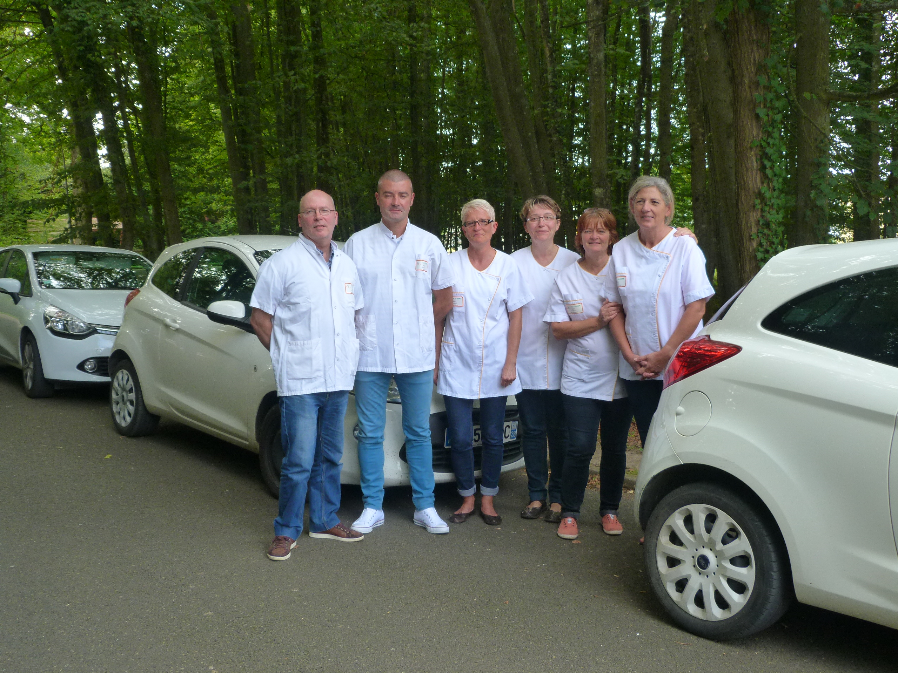
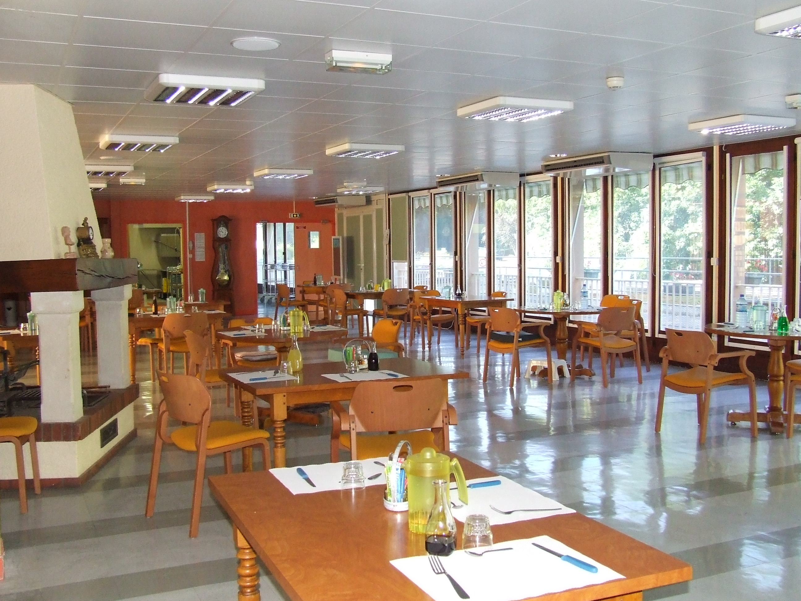

-
- 
- 

Madame, Mademoiselle, Monsieur,
Vous entrez au Centre Hospitalier de La Loupe. Soyez assuré que tout sera mis en oeuvre pour que votre séjour se passe dans les meilleures conditions.
Le personnel de l'hôpital sera à vos côtés, disponible et attentif à vos demandes. Il mettra en oeuvre toutes ses compétences et son expérience pour que votre séjour soit le plus agréable possible.
Que votre séjour soit le plus confortable possible.